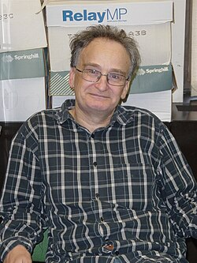

Saharon Shelah | |
|---|---|
שַׂהֲרֹן שֶׁלַח | |
 Shelah in 2005 | |
| Born | July 3, 1945 Jerusalem, British Mandate for Palestine (now Israel) |
| Alma mater |
|
| Known for | Proper Forcing, PCF theory, Sauer–Shelah lemma, Shelah cardinal |
| Awards |
|
| Scientific career | |
| Fields | Mathematical logic, model theory, set theory |
| Institutions | Hebrew University, Rutgers University |
| Michael O. Rabin | |
Doctoral students | Rami Grossberg Shai Ben-David |
{kind=link}
Saharon Shelah (Hebrew: שַׂהֲרֹן שֶׁלַח; Śahăron Šelaḥ, Hebrew pronunciation: [sähäʁo̞n ʃe̞läχ]; born July 3, 1945) is an Israeli mathematician. He is a professor of mathematics at the Hebrew University of Jerusalem and Rutgers University in New Jersey.
Biography
Shelah was born in Jerusalem on July 3, 1945. He is the son of the Hebrew poet and Canaanist political activist Yonatan Ratosh.[1] He attended Tichon Hadash high school in Tel Aviv.[2] He received his PhD for his work on stable theories in 1969 from the Hebrew University.[3]
Shelah is married to Yael,[1] and has three children.[4] His brother, magistrate judge Hamman Shelah was murdered along with his wife and daughter by an Egyptian soldier in the Ras Burqa massacre in 1985.
Shelah planned to be a scientist while at primary school, but initially was attracted to physics and biology, not mathematics.[5] Later he found mathematical beauty in studying geometry: He said, "But when I reached the ninth grade I began studying geometry and my eyes opened to that beauty—a system of demonstration and theorems based on a very small number of axioms which impressed me and captivated me." At the age of 15, he decided to become a mathematician, a choice cemented after reading Abraham Halevy Fraenkel's book An Introduction to Mathematics.[5]
He received a B.Sc. from Tel Aviv University in 1964, served in the Israel Defense Forces Army between 1964 and 1967, and obtained a M.Sc. from the Hebrew University (under the direction of Haim Gaifman) in 1967.[6] He then worked as a teaching assistant at the Institute of Mathematics of the Hebrew University of Jerusalem while completing a Ph.D. there under the supervision of Michael Oser Rabin,[6] on a study of stable theories.
Shelah was a lecturer at Princeton University during 1969–70, and then worked as an assistant professor at the University of California, Los Angeles during 1970–71.[6] He became a professor at Hebrew University in 1974, a position he continues to hold.[6]
He has been a visiting professor at the following universities:[6] the University of Wisconsin (1977–78), the University of California, Berkeley (1978 and 1982), the University of Michigan (1984–85), at Simon Fraser University, Burnaby, British Columbia (1985), and Rutgers University, New Jersey (1985). He has been a distinguished visiting professor at Rutgers University since 1986.[6]
Academic career
Shelah's main interests lie in mathematical logic, model theory in particular, and in axiomatic set theory.[7] He is a prolific author, with more than 1100 peer-reviewed research papers since his first in 1969.[8]
In model theory, he developed classification theory, which led him to a solution of Morley's problem.[9] In set theory, he discovered the notion of proper forcing, an important tool in iterated forcing arguments. With PCF theory, he showed that in spite of the undecidability of the most basic questions of cardinal arithmetic (such as the continuum hypothesis), there are still highly nontrivial ZFC theorems about cardinal exponentiation. Shelah constructed a Jónsson group,[10] an uncountable group for which every proper subgroup is countable. He showed that Whitehead's problem[11] is independent of ZFC. He gave the first primitive recursive upper bound to van der Waerden's numbers V(C,N).[12] He extended Arrow's impossibility theorem on voting systems.[13]
Maryanthe Malliaris and Shelah[14] studied Keisler's order, a construction from model theory, and in the process proved equality between two cardinal characteristics of the continuum, 𝖕 and 𝖙, resolving a problem that had been open for fifty years. This work earned them the 2017 Hausdorff Medal of the European Set Theory Society.
Shelah's work has had a deep impact on model theory and set theory. The tools he developed for his classification theory have been applied to a wide number of topics and problems in model theory and have led to great advances in stability theory and its uses in algebra and algebraic geometry as shown for example by Ehud Hrushovski and many others. Classification theory involves deep work developed in many dozens of papers to completely solve the spectrum problem on classification of first order theories in terms of structure and number of nonisomorphic models, a huge tour de force. Following that he has extended the work far beyond first order theories, for example for abstract elementary classes. This work also has had important applications to algebra by works of Boris Zilber.[15]
Awards
- Three times speaker at the International Congress of Mathematicians (1974 invited, 1983 plenary, 1986 plenary)
- The first recipient of the Erdős Prize, in 1977[16]
- The Karp Prize of the Association for Symbolic Logic in 1983[17]
- The Israel Prize, for mathematics, in 1998[18]
- The Bolyai Prize in 2000[19]
- The Wolf Prize in Mathematics in 2001[20]
- The EMET Prize for Art, Science and Culture in 2011[21]
- The Leroy P. Steele Prize, for Seminal Contribution to Research, in 2013[22]
- Honorary member of the Hungarian Academy of Sciences, in 2013[23]
- Advanced grant of the European Research Council (2013)[24]
- Hausdorff Medal of the European Set Theory Society, joint with Maryanthe Malliaris, 2017[25]
- Schock Prize in Logic and Philosophy of the Royal Swedish Academy of Sciences, 2018[26]
- Honorary doctorate from the Technische Universität Wien, 2019[27]
Selected works
- Proper forcing, Springer 1982 ISBN 978-0-387-11593-1
- Proper and improper forcing (2nd edition of Proper forcing), Springer 1998 ISBN 978-1-107-16836-7
- Around classification theory of models, Springer 1986 ISBN 978-3-540-16448-7
- Classification theory and the number of non-isomorphic models, Studies in Logic and the Foundations of Mathematics, 1978,[28] 2nd edition 1990, Elsevier ISBN 978-0-444-70260-9
- Classification Theory for Abstract Elementary Classes, College Publications 2009 ISBN 978-1-904987-71-0
- Classification Theory for Abstract Elementary Classes, Volume 2, College Publications 2009 ISBN 978-1-904987-72-7
- Cardinal Arithmetic, Oxford University Press 1994 ISBN 0-19-853785-9[29]
See also
References
- ^ a b (in Hebrew) Shelah, Saharon (April 5, 2001). "זיכרונותיו של בן" [Memoirs of a Son]. Haaretz. Retrieved August 31, 2014.
כשעמדתי להציג לפני חברתי יעל (עתה רעייתי) את בני משפחתי...הפרופ' שהרן שלח מן האוניברסיטה העברית בירושלים, בנו של יונתן רטוש... [As I was about to present to friend Yael (now my wife), my family ... Professor Saharon Shelah of the Hebrew University of Jerusalem, son of Yonathan Ratosh ...]
- ^ "תיכון חדש, ביה"ס של הסלבס, חוגג 75". NRG360. August 29, 2011. Retrieved October 7, 2025.
- ^ Saharon Shelah at the Mathematics Genealogy Project
- ^ (in Hungarian) Réka, Szász (March 2001). "Harc a matematikával és a titkárnőkkel" [Struggle with mathematics and the secretaries]. Magyar Tudományos (in Hungarian). Archived from the original on April 3, 2012. Retrieved August 31, 2014.
Hungarian: A gyerekei mivel foglalkoznak? A nagyobbik fiam zeneelméletet tanul, a lányom történelmet, a kisebbik fiam pedig biológiát. (What are your children doing? My elder son is learning the theory of music, my daughter history, my younger son biology.)
- ^ a b Moshe Klein. "Interview with Saharon Shelah" (PDF). Gan Adam. Retrieved August 5, 2014.
- ^ a b c d e f "Saharon Shelah". School of Mathematics and Statistics, University of St Andrews, Scotland. Retrieved August 5, 2014.
- ^ Väänänen, Jouko (April 20, 2020). "An Overview of Saharon Shelah's Contributions to Mathematical Logic, in Particular to Model Theory". Theoria. 87 (2): 349–360. doi:10.1111/theo.12238. eISSN 1755-2567. hdl:10138/315013. ISSN 0040-5825. S2CID 216119512.
- ^ "Publications". Shelah's Archive. Retrieved July 16, 2025.
- ^ Hart, Bradd; Hrushovski, Ehud; Laskowski, Michael C. (2000). "The Uncountable Spectra of Countable Theories". The Annals of Mathematics. 152 (1): 207. arXiv:math/0007199. doi:10.2307/2661382. JSTOR 2661382.
- ^ Shelah, Saharon (1980). "On a Problem of Kurosh, Jonsson Groups, and Applications". Studies in Logic and the Foundations of Mathematics. Vol. 95. Elsevier. pp. 373–394. doi:10.1016/s0049-237x(08)71346-6. ISBN 978-0-444-85343-1.
- ^ Shelah, Saharon (1974). "Infinite abelian groups, whitehead problem and some constructions". Israel Journal of Mathematics. 18 (3): 243–256. doi:10.1007/BF02757281. ISSN 0021-2172.
- ^ Shelah, Saharon (1988). "Primitive recursive bounds for van der Waerden numbers". Journal of the American Mathematical Society. 1 (3): 683–697. doi:10.2307/1990952. JSTOR 1990952. MR 0929498.
- ^ Shelah, Saharon (2001). "On the Arrow property". arXiv:math/0112213.
- ^ Malliaris, M.; Shelah, S. (2016). "Cofinality spectrum theorems in model theory, set theory, and general topology". Journal of the American Mathematical Society. 29 (1): 237–297. arXiv:1208.5424. doi:10.1090/jams830. MR 3402699. S2CID 13182394.
- ^ Zilber, Boris (October 2016). "Model theory of special subvarieties and Schanuel-type conjectures". Annals of Pure and Applied Logic. 167 (10): 1000–1028. arXiv:1501.03301. doi:10.1016/j.apal.2015.02.002. ISSN 0168-0072. S2CID 33799837.
- ^ "Erdős Prize Website". IMU.org.il. Archived from the original on August 17, 2013.
- ^ "Karp Prize Recipients". Association for Symbolic Logic. Archived from the original on July 22, 2019. Retrieved September 28, 2019.
- ^ "Israel Prize Official Site – Recipients in 1998 (in Hebrew)". CMS.education.gov.il. Retrieved August 31, 2014.
- ^ "Laudation of Shelah on the occasion of winning the Bolyai Prize (in Hungarian)" (PDF). Renyi.hu. Retrieved August 31, 2014.
- ^ "The Wolf Foundation Prize in Mathematics". Wolf Foundation. 2008. Archived from the original on September 21, 2017. Retrieved August 31, 2014.
- ^ "EMET Prize". 2011. Archived from the original on September 3, 2014. Retrieved August 31, 2014.
- ^ "January 2013 Prizes and Awards" (PDF). American Mathematical Society and Mathematical Association of America. January 10, 2013. p. 49. Retrieved August 31, 2014.
- ^ "New members of the Hungarian Academy of Sciences". Archived from the original on September 3, 2014. Retrieved August 31, 2014.
- ^ "ERC Grants 2013" (PDF). European Research Council. 2013. Retrieved August 31, 2014.
- ^ "Hausdorff medal 2017". July 5, 2017. Retrieved September 28, 2019.
- ^ "Schock Prize 2018". Archived from the original on April 14, 2021. Retrieved September 28, 2019.
- ^ "Ehrendoktorat der TU Wien für Saharon Shelah". 2019. Retrieved February 2, 2020.
- ^ Baldwin, John T. (1981). "Review: Classification theory and the number of non-isomorphic models by Saharon Shelah" (PDF). Bull. Amer. Math. Soc. (N.S.). 4 (2): 222–229. doi:10.1090/s0273-0979-1981-14891-6 (inactive September 13, 2025).
{{cite journal}}: CS1 maint: DOI inactive as of September 2025 (link) - ^ Baumgartner, James E. (1996). "Review: Cardinal arithmetic by Saharon Shelah" (PDF). Bull. Amer. Math. Soc. (N.S.). 33 (3): 409–411. doi:10.1090/s0273-0979-96-00673-8 (inactive September 13, 2025).
{{cite journal}}: CS1 maint: DOI inactive as of September 2025 (link)
External links
- Archive of Shelah's mathematical papers, shelah.logic.at
- Baldwin, John T. (2008). "Abstract elementary classes: some answers, more questions". In Andretta, Alessandro; Kearnes, Keith; Zambella, Domenico (eds.). Logic Colloquium 2004. Chicago, IL : Cambridge: Cambridge University Press. pp. 1–17. ISBN 978-0-521-88424-2. OCLC 177021884.